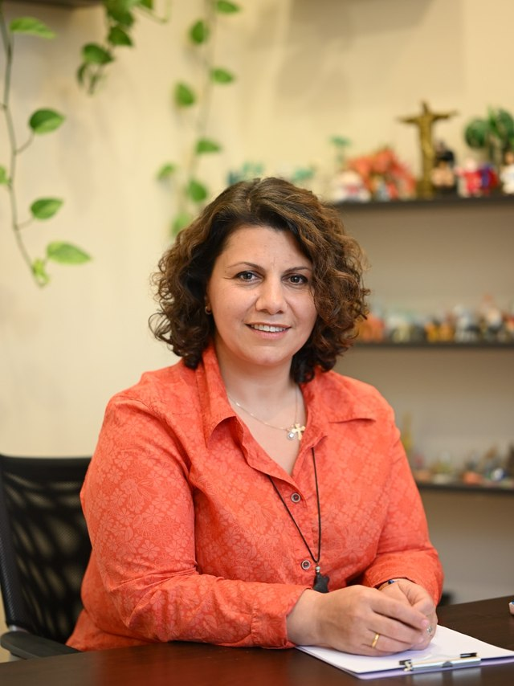

დამფუძნებელი და ხელმძღვანელი
დიანა ნიკოლაიშვილი
ექიმი-ფსიქოთერაპევტი • ტრენერი • ნეიროგრაფიკის სპეციალისტი • ბიოსინთეზის სომატური და სიღრმისეულ თერაპიაზე ორიენტირებული ფსიქოთერაპევტი (EABP)
მრავალწლიანი პროფესიული გამოცდილება, სამედიცინო განათლება და ფსიქოთერაპიის სფეროში სპეციალიზაცია ქმნის მისი პროფესიული საქმიანობის საფუძველს. მიდგომა აერთიანებს ფსიქოთერაპიას, სხეულზე ორიენტირებულ მუშაობას, ემოციურ და ფსიქოსომატურ პროცესებს, შემოქმედებით მეთოდებსა და პიროვნული განვითარების პრაქტიკებს.
ჩემი მიზანია შევქმნა სივრცე, სადაც ადამიანს შეუძლია უფრო ღრმად გაიცნოს საკუთარი თავი, აღიდგინოს შინაგანი რესურსები და შექმნას რეალური ცვლილებისთვის საჭირო საფუძველი.